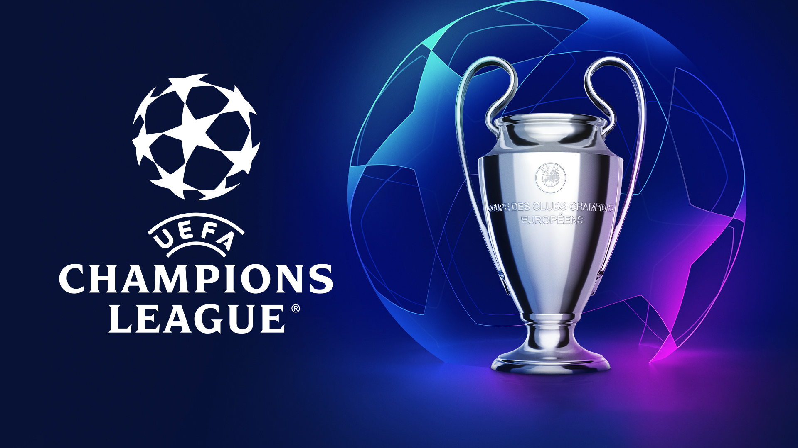
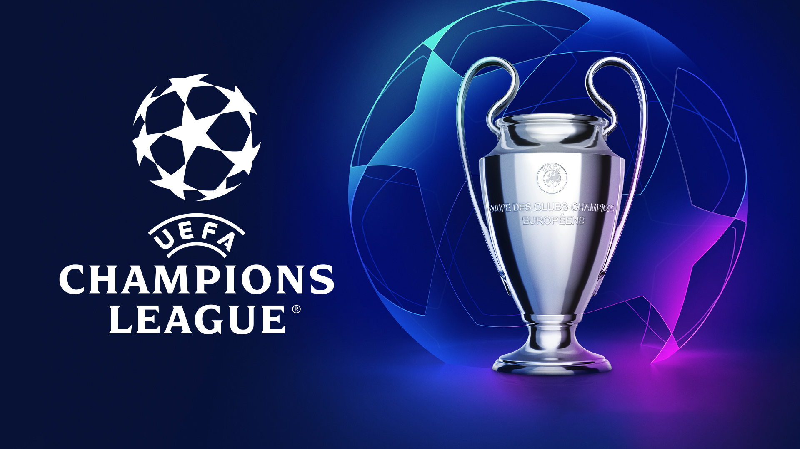
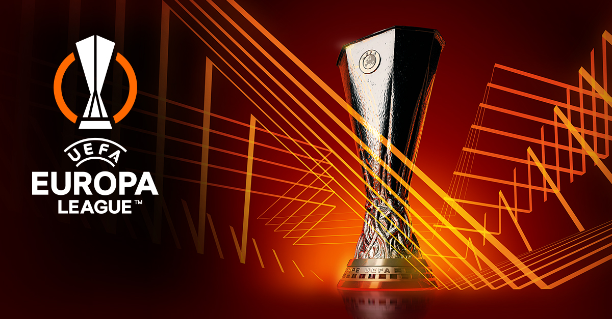
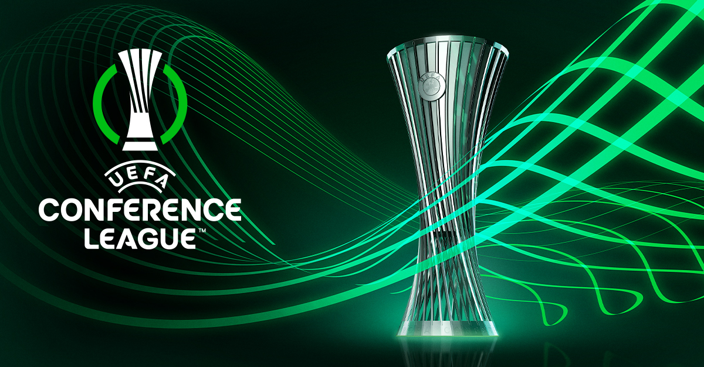
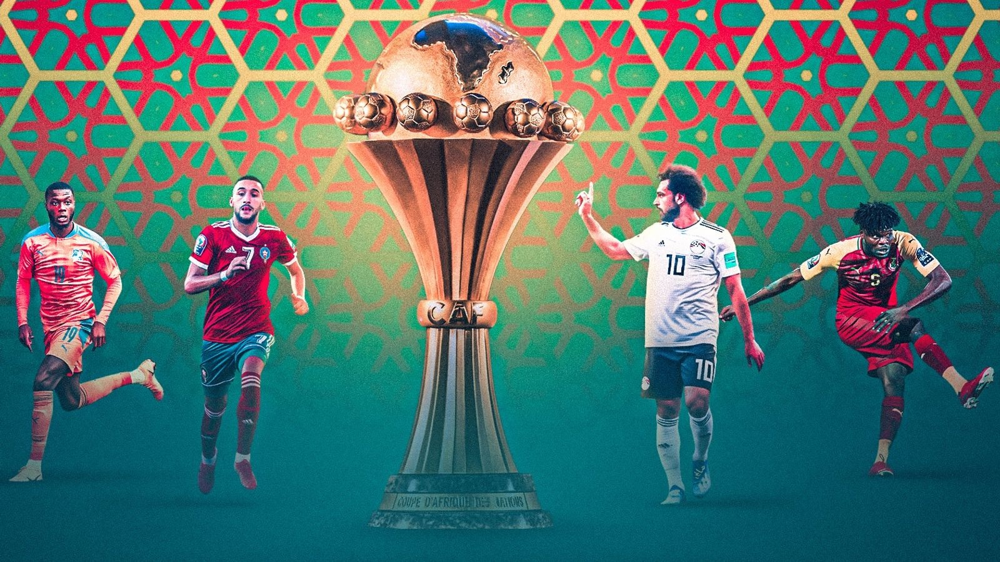
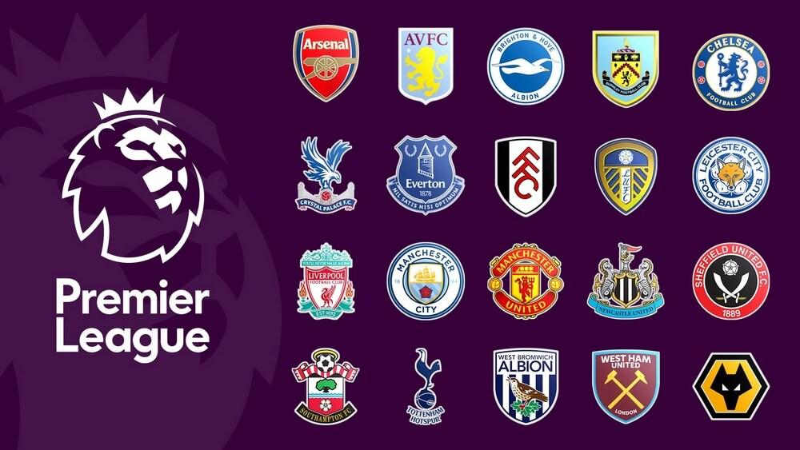
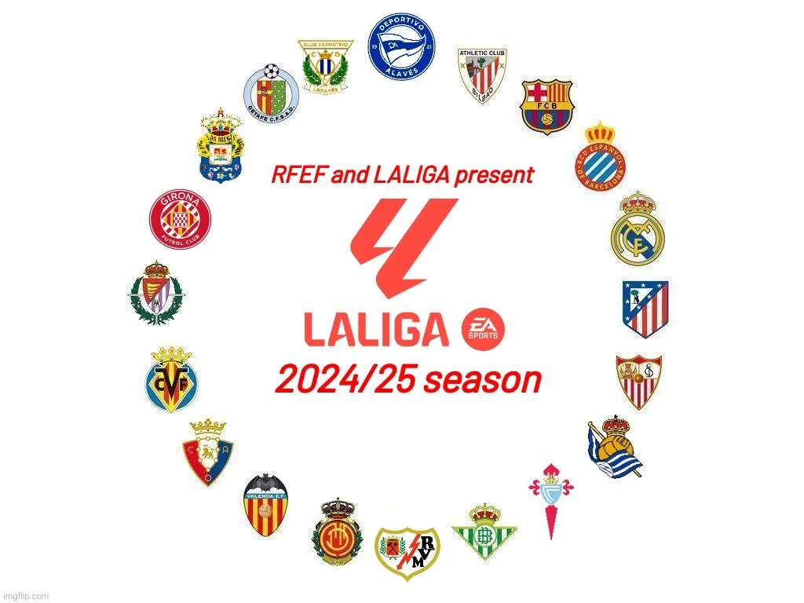
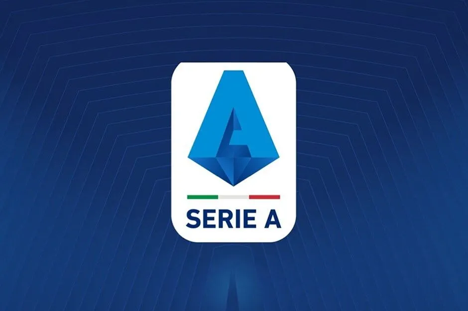
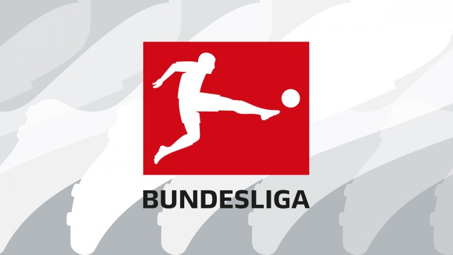
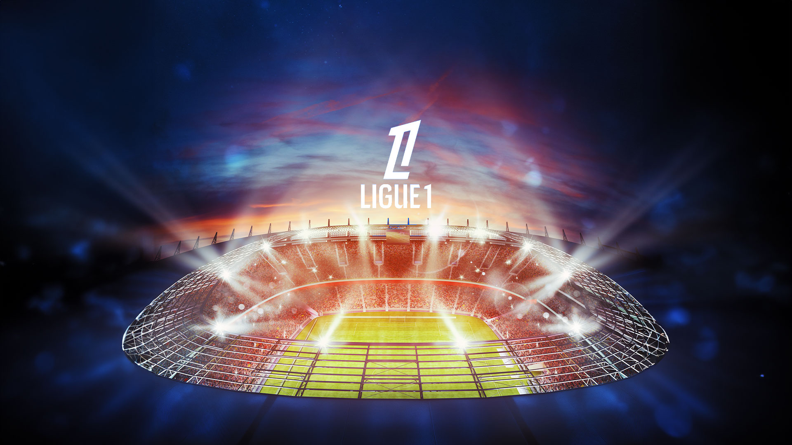

Ligue des Champions
La Ligue des Champions est la compétition la plus prestigieuse du football européen. Les meilleurs clubs européens s'affrontent chaque saison pour décrocher le titre de champion d'Europe.
Explorez les grands clubs, les compétitions internationales, et les joueurs légendaires qui façonnent le football moderne. Découvrez les tournois de football les plus célèbres au monde. De la Ligue des Champions à la Coupe du Monde de la FIFA, chaque compétition est l'occasion de voir s'affronter les plus grandes équipes et les meilleurs joueurs. Vivez l'intensité des matchs, les exploits de dernière minute et la passion des supporters.
La Ligue des Champions est la compétition la plus prestigieuse du football européen. Les meilleurs clubs européens s'affrontent chaque saison pour décrocher le titre de champion d'Europe.
La Ligue Europa est la deuxième compétition européenne en termes de prestige. Les clubs européens qui n'ont pas réussi à se qualifier pour la Ligue des Champions s'affrontent pour décrocher ce titre européen.
La Ligue de la Conférence de l'UEFA est la troisième compétition européenne. Elle permet à des clubs moins connus de participer à des matchs internationaux et de viser un trophée européen.
La Coupe du Monde est la compétition la plus prestigieuse au niveau international. Les meilleures équipes nationales s'affrontent tous les 4 ans pour décrocher le titre de champion du monde.

La Coupe d'Europe des Nations, plus connue sous le nom de l'Euro, est la compétition phare des équipes nationales européennes. Elle se déroule tous les 4 ans et rassemble les meilleures sélections d'Europe.

En plus de la Coupe du Monde et de l'Euro, il existe de nombreuses autres compétitions internationales telles que la Copa América en Amérique du Sud, ou encore la Coupe d'Afrique des Nations.
La Premier League anglaise est considérée comme l'une des ligues les plus compétitives et excitantes au monde. Des clubs comme Manchester United, Liverpool et Manchester City y font la loi.
La Liga espagnole est dominée par deux grands clubs : le Real Madrid et le FC Barcelona. La rivalité entre ces deux clubs est l'une des plus célèbres du football mondial.
La Serie A italienne est connue pour son jeu tactique et défensif. Des clubs comme la Juventus, l'Inter Milan et l'AC Milan en font une des ligues les plus suivies.
La Bundesliga allemande est célèbre pour ses stades pleins et son football dynamique. Le Bayern Munich est le club le plus titré de cette ligue.
La Ligue 1 française est dominée par le Paris Saint-Germain ces dernières années. C'est également une ligue qui permet à de nombreux jeunes talents d'émerger.
